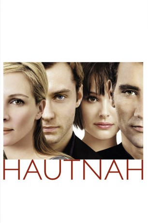

#6035 Hautnah
Alternativ: Closer
Auszeichnungen: für 2 Oscars nominiert 2 GoldenGlobes gewonnen 1 BAFTA-Awards gewonnen
 
 IMDB-Wertung: 7.3 / 10
IMDB-Wertung: 7.3 / 10  Metascore: 0
Metascore: 0 
Zwei Männer, zwei Frauen, zwei Paare, deren Beziehungen durch zufällige Begegnungen vollkommen durcheinander geraten. Der Schriftsteller Dan verliebt sich auf den ersten Blick in die Stripperin Alice. Doch kurz darauf fängt er eine Affäre mit der geschiedenen Fotografin Anna an, die wiederum den selbstbewussten Arzt Larry heiratet. Nun beginnt zwischen Dan und Larry ein verzweifelter Kampf um beide Frauen. Doch dabei geht es weniger darum, die große Liebe zu gewinnen, als um den Triumph des einen über den anderen - ohne Kompromisse und ohne Rücksicht auf verletzte Gefühle und gebrochene Herzen.
Jahr: 2004
Dauer: 103 Minuten
FSK: 12
Land: USA Studio: Sony PicturesTonspuren: DD5.1 - ,
Untertitel:
Auflösung: 1080p (1920x1040) Größe: 8642 MB
Genre: Drama, Liebe
Regisseur: Mike Nichols
Drehbuch: Ben Ripley
Soundtrack:
Darsteller:
 Julia Roberts als Anna
Julia Roberts als Anna Jude Law als Dan
Jude Law als Dan Natalie Portman als Alice
Natalie Portman als Alice Clive Owen als Larry
Clive Owen als Larry- Nick Hobbs als Taxi Driver
 Colin Stinton als Customs Officer
Colin Stinton als Customs Officer- Selena Mars als Traveler , uncredited
 Steve Morphew als Bartender , uncredited
Steve Morphew als Bartender , uncredited- Abdul Pope als Doctor , uncredited
- Jacqui-Lee Pryce als Traveller , uncredited
 Peter Rnic als Bodyguard , uncredited
Peter Rnic als Bodyguard , uncredited- Bret Yount als Customs Officer , uncredited
- Steve Benham als Car driver , uncredited
- Elizabeth Bower als Chatty Exhibition Guest , uncredited
- Ray Donn als Customs Officer , uncredited
- Daniel Dresner als Coughing Man , uncredited
- Rrenford Junior Fagan als Bus Passenger , uncredited
- Antony Gabriel als Luke , uncredited
- Michael Haley als Smoking Man , uncredited
- Leonard Silver als Exhibition Guest , uncredited
- Robert Stone als Bouncer , uncredited
- Brian Teles als Strip Club Customer , uncredited
Datei: X:\2004(G-M)\Hautnah (2004, FSK12, 1920x1040).mkv seit 24.04.2017
Festplatte: HD 2003-2004-2005(A-F)
 Es gibt insgesamt 41 Filme in der Gruppe '2004(G-M)'
Es gibt insgesamt 41 Filme in der Gruppe '2004(G-M)'